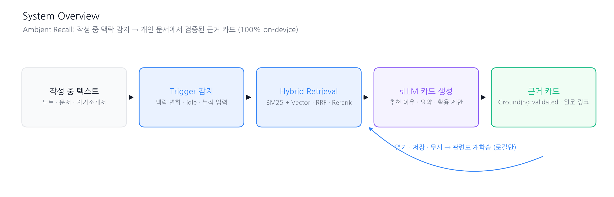
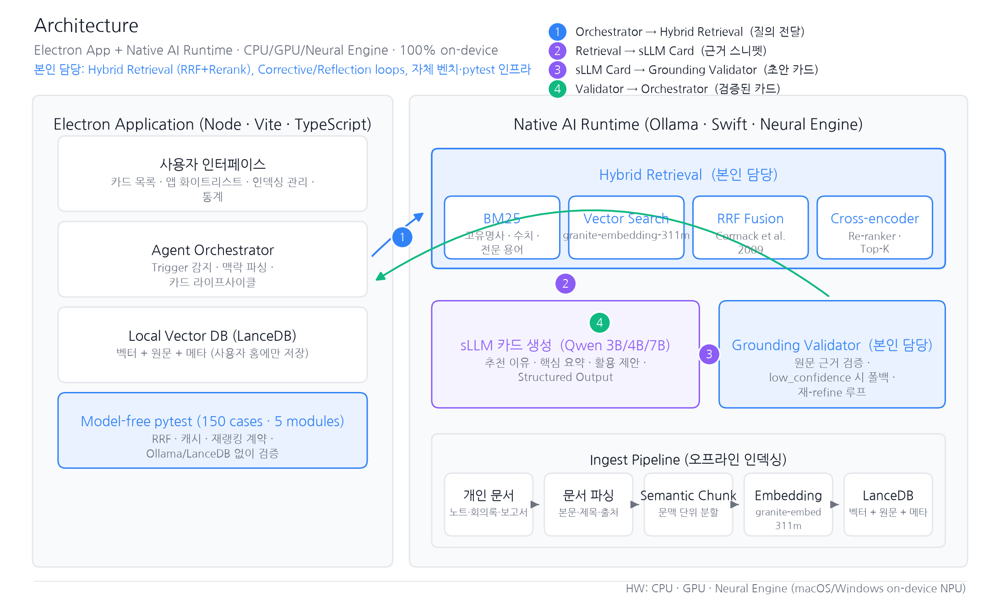
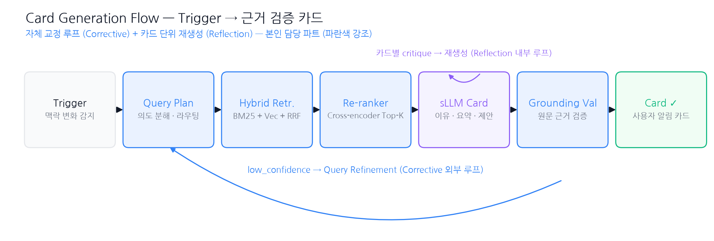
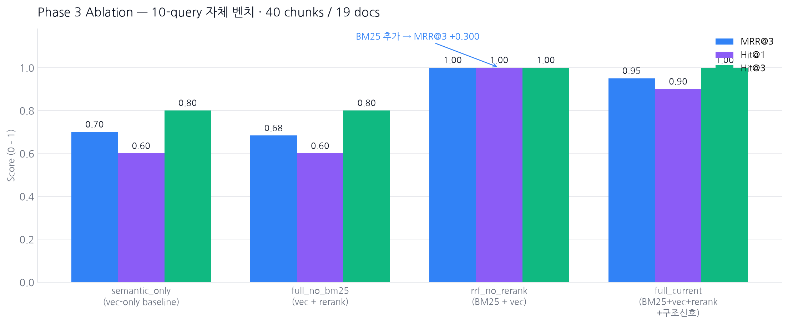

지식 노동자는 스치듯 본 자료를 다시 찾기 위해 주 5.3시간을 검색·전환에 소비하고, 그 결과 재생산에 소요되는 시간의 50% 이상이 "이미 본 것을 다시 찾는" 과정에 낭비된다 (McKinsey · IDC).
기존 검색·챗 기반 도구는 능동적으로 다시 꺼내주지 못하고, 개인 문서를 클라우드로 올려야 해 프라이버시·규제 리스크가 크다. 필요한 것은 작성 중인 맥락을 감지해서 원문 근거가 붙은 카드를 온디바이스에서 스스로 꺼내주는 에이전트다.
* 팀 내 본인 담당은 Retrieval 파이프라인 (Hybrid + Rerank + 구조신호)과 Agent 자기 교정 루프 (Corrective / Reflection / Grounding Validator)이다. Electron UI·디자인·비즈니스 파트는 별도 팀원이 담당했다.
전체 시스템은 Electron Application + Native AI Runtime 2-계층으로 나누어 UI 반응성과 AI 성능(CPU · GPU · Neural Engine)을 분리하고, 100% 온디바이스로 개인 문서가 기기 밖으로 나가지 않도록 설계했다. 본인은 이 중 파란색으로 강조된 Hybrid Retrieval과 Corrective / Reflection 루프 + Grounding Validator를 담당했다.


* SMIM 데모 영상 — 사용자가 노트를 작성하는 도중 SMIM이 스스로 관련 개인 문서를 꺼내 근거가 붙은 카드로 제안한다.
본인이 담당한 Hybrid Retrieval + 자기 교정 루프는 자체 벤치(10-query · 40 chunks · 19 docs)에서 vec-only baseline 대비 MRR@3 0.70 → 0.95, Hit@1 60% → 90%로 개선되었다. BM25만 추가해도 (rrf_no_rerank) MRR@3 +0.300이 확보되었고, 여기에 구조 신호까지 얹은 full_current가 안정적인 최상단 점수를 냈다. E2E 파이프라인(26 카드)에서는 81%가 sLLM 카드로 정상 생성되었고 나머지 19%는 keyword 폴백으로 안전하게 처리되었다.
